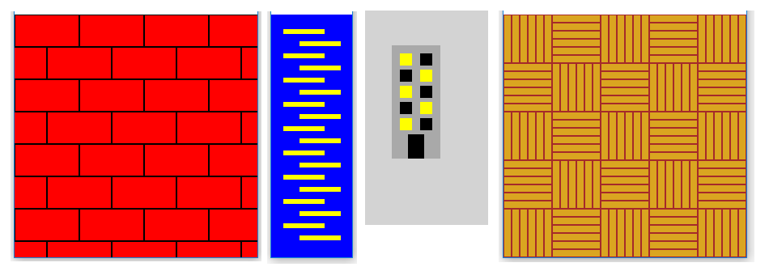

Making more complex drawings using loops¶
The regularity we want to use in the drawings can be more complex, compred to previous problems. Here are some examples:
In all these cases, regularity still exists and can be used when writing programs. We can also observe that the examples in the picture all have something in common, which is that two rules appear alternately. For example, in a brick drawing, the first row of bricks begins with the whole brick, the second with the half brick, the third again with the whole brick, and so on. Similarly, illuminated and tinted windows appear alternately in the building drawing.
Due to the alternation of the two rules in all the drawings, the programs drawing them will also have some similarities. Let’s look at code examples.
Example - zipper¶
To draw such a zipper, we will certainly draw the lines in a loop. The drawing shows that each subsequent line is the same number of pixels lower than the previous one, so there should be no problem with computing the y coordinate. The situation with x coordinates is somewhat more difficult because they change according to a slightly more complex rule.
We can solve this problem by using the if statement in the loop. After drawing one line, we check which of the two possible values \(x\) coordinate of the beginning of the line has. If it has the first value - we assign it the second and vice versa. Here’s what it looks like in the program:
Another possibility to solve the problem with x coordinates is to draw two lines in one loop, for example:
Example - Bricks¶
We have already mentioned that the rows of bricks alternately start with the whole brick and half of the brick. That is why when drawing bricks we can use any of the same two ideas as in the previous example.
Let the length of the brick be denoted by: math:a and its height by \(h\). We get the whole brick at the beginning of the row by drawing a rectangle at a given height, with \(x\) coordinate equal to zero. Half of a brick at the beginning of a row can be obtained by drawing an entire brick displaced by \(a \over 2\) to the left, that is, by drawing a rectangle with \(x\) coordinate equal to -a // 2. Thus, only the right half of the brick is visible. It remains to be solved when we draw a displaced brick and when a regular one.
One solution is to store the beginning of the row of bricks in a variable, call it x_start. After each line is drawn, we check that the variable x_start has a value of zero or -a // 2. As in the previous example, whichever of the two values we have, we will assign the other value to the variable, so that in the next row the drawing of the bricks will start differently.
Complete unfinished statements for setting the x_start variable
The second idea is to draw two bricks in each pass through the double loop: the one which we drew in the first solution, and the brick below and half-left of it. Notice that in this case the loop by y0 has twice the step, because the inner loop draws two rows of bricks.
Complete unfinished statements for drawing rectangles
Tasks for exercise¶

{kind=link}
Task - chessboard
Draw a chessboard across the entire window (the board squares should be 50x50 pixels). The lower left square should be dark.
Most of the program is written, try to finish it.
Task - Building
Modify the program below so that the windows are drawn in a double loop.
The part that needs to be changed, after the change, can start like this:
for y in range(5): # floor
for x in range(2): # side of the building (0 - left, 1 - right)
if (x+y) % 2 == 0:
color = ...
If you haven’t had any major problems with all these tasks, try to solve one more difficult task as well.
Task - challenge: parquet
Write a program that shows the parquet (you can see the parquet picture when you click the “Play task” button, and the picture is the same as at the beginning of this page, right). The goal, of course, is to draw the floorboards in a multiple loop. The board dimensions are 10x60 and the colors are goldenrod and brown.
The skeleton of the program roughly looks like this:
for row ...
for column ...
if ...
for floorboard in range(6):
pg.draw.rect(...)
else:
for floorboard in range(6):
pg.draw.rect(...)